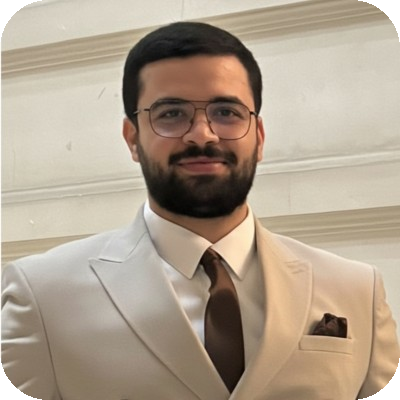

Embedded Systems Engineer · V&V · Test Automation Ingénieur Systèmes Embarqués · V&V · Automatisation des Tests
2+ years building and validating embedded systems in the automotive sector — from bare-metal C firmware to Python CI/CD pipelines, from real-vehicle drive tests to custom test bench deployment.
2 ans d'expérience en développement firmware et validation de systèmes embarqués dans le secteur automobile — du C bare-metal aux pipelines CI/CD Python, des essais sur véhicule réel à la conception de bancs de test.
ExperienceExpérience
FORVIA — Apprentice · ParisAlternance · Paris
FORVIA — Internship · ParisStage · Paris
Bureau Veritas — Apprentice · Île-de-FranceAlternance · Île-de-France
Personal ProjectsProjets Personnels
Passive CAN bus capture tool. C++ firmware on Arduino Mega (MCP2515/SPI, 500 kbps listen-only), Python host app with frame parsing, ID filtering and CSV logging. pytest suite + Jenkins CI pipeline.
Outil de capture passive du bus CAN. Firmware C++ sur Arduino Mega (MCP2515/SPI, 500 kbps listen-only), app Python avec parsing, filtrage ID et logging CSV. Suite pytest + pipeline CI Jenkins.
Android UI automation framework via ADB. Modular Python architecture, XML UI parser, screen-state detection via dumpsys, thread-safe watchdog daemon. 377 pytest tests (78% coverage), Docker multi-stage, Jenkins pipeline.
Framework d'automatisation UI Android via ADB. Architecture Python modulaire, parseur UI XML, détection d'état via dumpsys, watchdog thread-safe. 377 tests pytest (78% couverture), Docker multi-stage, Jenkins.
LoRaWAN telemetry for connected beehives. Ultra-low-power design (LiPo + solar, deep sleep ESP32, TPL5110). 6+ months field-validated. Sensor calibration (HX711, DHT22), MQTT/REST cloud integration.
Télémétrie LoRaWAN pour ruches connectées. Architecture ultra-basse consommation (LiPo + solaire, deep sleep ESP32, TPL5110). Validation terrain 6 mois. Calibration capteurs (HX711, DHT22), intégration MQTT/REST.
IoT wearable for amputee runners. ESP32/FreeRTOS low-power architecture, multi-sensor acquisition (IMU MPU6050, pressure, flex), BLE stack implementation. Field-validated — 8h autonomy target achieved.
Wearable IoT pour coureurs amputés. ESP32/FreeRTOS low-power, acquisition multisensorielle (IMU MPU6050, pression, flexion), stack BLE. Validé terrain — objectif 8h d'autonomie atteint.
Real-time educational game on LPC1769 (ARM Cortex-M3) / FreeRTOS. Priority scheduling, semaphores, message queues. Deterministic latency < 50ms validated, CPU load tested.
Jeu éducatif temps réel sur LPC1769 (ARM Cortex-M3) / FreeRTOS. Ordonnancement prioritaire, sémaphores, files de messages. Latence déterministe < 50ms validée, tests de charge CPU.
SkillsCompétences
EducationFormation
Sorbonne Business School · Paris
Polytech Sorbonne · Paris
Sorbonne Université · Paris
Contact